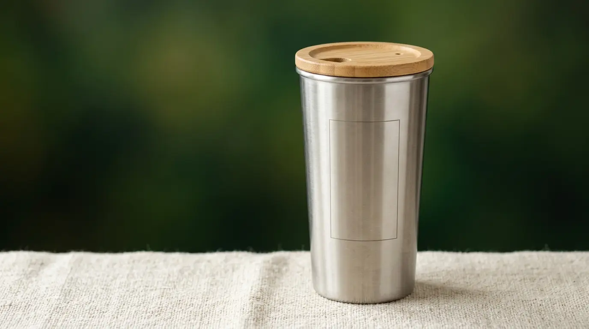

Apa Itu Merchandise Kantor Ramah Lingkungan?
Merchandise kantor ramah lingkungan adalah barang promosi atau fungsional bercetak logo perusahaan yang diproduksi menggunakan bahan alami, dapat terurai, atau hasil daur ulang, sebagai alternatif dari bahan plastik konvensional.
Kategori ini mencakup berbagai jenis produk, mulai dari alat tulis berbahan bambu, tas berbahan kanvas daur ulang, hingga botol minum berbahan stainless steel yang dapat dipakai berulang kali.
Tujuan utama dari merchandise jenis ini bukan hanya sebagai media branding, tetapi juga sebagai wujud nyata kepedulian perusahaan terhadap dampak lingkungan dari aktivitas bisnisnya.
Konsep merchandise ramah lingkungan berbeda dari merchandise konvensional dalam hal pemilihan material dan proses produksi.
Bahan yang digunakan umumnya dipilih karena sifatnya yang lebih mudah terurai, dapat didaur ulang kembali, atau berasal dari sumber daya terbarukan seperti bambu dan kayu bersertifikasi.
Mengapa Merchandise Ramah Lingkungan Penting bagi Branding Perusahaan?
Merchandise ramah lingkungan penting bagi branding perusahaan karena menunjukkan komitmen nyata terhadap keberlanjutan, yang semakin menjadi pertimbangan penting bagi klien, mitra, dan karyawan dalam menilai kredibilitas sebuah brand.
Kesadaran terhadap isu lingkungan hidup di kalangan masyarakat dan dunia bisnis terus berkembang.
Perusahaan yang mampu menunjukkan langkah konkret dalam mengurangi dampak lingkungan, termasuk melalui pemilihan merchandise, cenderung dipandang lebih bertanggung jawab dan relevan dengan nilai-nilai yang dianut generasi kerja saat ini.
Selain itu, penggunaan merchandise ramah lingkungan juga dapat menjadi pembeda kompetitif.

"Di tengah banyaknya perusahaan yang masih menggunakan merchandise berbahan plastik sekali pakai, pemilihan produk berkelanjutan dapat membantu brand tampil lebih menonjol dan meninggalkan kesan positif yang lebih kuat kepada penerimanya."
— Meilita Mujayanti, Penulis Merchandise Kantor
Dari sisi internal, kebijakan penggunaan merchandise ramah lingkungan juga dapat memperkuat budaya kerja yang selaras dengan nilai keberlanjutan, sehingga turut mendukung strategi employer branding perusahaan secara keseluruhan.
Apa Saja Jenis Bahan yang Umum Digunakan untuk Merchandise Ramah Lingkungan?
Jenis bahan yang umum digunakan untuk merchandise ramah lingkungan meliputi bambu, kanvas daur ulang, cork atau gabus alami, kertas daur ulang, dan stainless steel yang dapat dipakai berulang kali.
Bambu banyak digunakan karena pertumbuhannya yang relatif cepat dibandingkan kayu keras pada umumnya, sehingga dianggap sebagai sumber daya yang lebih terbarukan.
Bahan ini sering diaplikasikan pada produk seperti alat tulis, tempat pensil, dan casing perangkat elektronik ringan.
Kanvas daur ulang umumnya digunakan untuk tas kerja atau totebag karena teksturnya yang kuat dan dapat diproduksi dari serat kain bekas yang diolah kembali.
Cork atau gabus alami sering dipilih untuk produk seperti tatakan gelas atau aksesori meja kerja karena sifatnya yang ringan, tahan lama, dan berasal dari kulit pohon yang dapat tumbuh kembali tanpa perlu menebang pohonnya.
Kertas daur ulang digunakan untuk notebook, kemasan, atau kartu ucapan, sementara stainless steel dipilih untuk produk seperti tumbler karena sifatnya yang tahan lama dan dapat digunakan berulang kali, sehingga mengurangi kebutuhan terhadap botol plastik sekali pakai.
Bagaimana Cara Memilih Merchandise Kantor Ramah Lingkungan yang Tepat?
Cara memilih merchandise kantor ramah lingkungan yang tepat adalah dengan mempertimbangkan kesesuaian bahan terhadap fungsi produk, daya tahan penggunaan, serta konsistensi pesan keberlanjutan yang ingin disampaikan perusahaan.
Langkah pertama adalah memastikan bahan yang dipilih benar-benar sesuai dengan fungsi produk.
Bahan bambu misalnya lebih cocok untuk produk kering seperti alat tulis, sementara produk yang bersentuhan dengan cairan seperti tumbler lebih baik menggunakan stainless steel food grade agar tetap aman digunakan dalam jangka panjang.
Langkah kedua adalah mempertimbangkan daya tahan produk. Merchandise ramah lingkungan idealnya tetap memiliki umur pakai yang panjang, karena tujuan keberlanjutan tidak akan tercapai apabila produk cepat rusak dan akhirnya dibuang dalam waktu singkat.
Langkah ketiga adalah menjaga konsistensi pesan keberlanjutan pada seluruh lini merchandise yang digunakan perusahaan.
Penggunaan bahan ramah lingkungan sebaiknya juga diimbangi dengan kemasan yang minim plastik, sehingga pesan yang disampaikan terasa lebih konsisten dan tidak kontradiktif.
Langkah terakhir adalah memastikan kualitas cetak logo pada bahan alami tetap terjaga. Beberapa bahan seperti bambu atau kayu memerlukan teknik cetak khusus seperti laser engraving agar hasil logo tetap presisi dan tahan lama meski permukaannya tidak serata bahan plastik atau logam.
Apa Saja Kesalahan Umum saat Memilih Merchandise Ramah Lingkungan?
Kesalahan umum saat memilih merchandise ramah lingkungan meliputi memilih bahan hanya karena tren tanpa mempertimbangkan fungsi, mengabaikan kualitas kemasan, serta kurangnya edukasi kepada penerima mengenai nilai keberlanjutan produk.
Kesalahan pertama yang sering terjadi adalah memilih bahan ramah lingkungan semata karena sedang menjadi tren, tanpa mempertimbangkan apakah bahan tersebut benar-benar sesuai dengan fungsi produk yang dibutuhkan.
Hal ini dapat menyebabkan produk cepat rusak atau tidak nyaman digunakan, sehingga tujuan keberlanjutan justru tidak tercapai.
Kesalahan kedua adalah mengabaikan aspek kemasan. Produk utama yang ramah lingkungan namun dikemas menggunakan plastik berlebihan dapat mengurangi kredibilitas pesan keberlanjutan yang ingin disampaikan perusahaan.
Kesalahan ketiga adalah kurangnya edukasi kepada penerima. Tanpa penjelasan singkat mengenai bahan dan nilai keberlanjutan produk, penerima merchandise mungkin tidak menyadari nilai tambah dari produk tersebut, sehingga pesan branding yang ingin disampaikan menjadi kurang maksimal.
Bagaimana Merchandise Ramah Lingkungan Berperan dalam Strategi Branding Jangka Panjang?
Merchandise ramah lingkungan berperan sebagai bagian dari strategi branding jangka panjang dengan membangun asosiasi positif antara perusahaan dan nilai keberlanjutan di benak klien, karyawan, maupun mitra bisnis.
Penggunaan merchandise berkelanjutan secara konsisten dapat memperkuat narasi brand sebagai perusahaan yang peduli terhadap isu lingkungan.
Narasi ini tidak hanya bermanfaat untuk kesan eksternal, tetapi juga dapat diintegrasikan ke dalam laporan keberlanjutan atau komunikasi corporate social responsibility perusahaan.
Selain itu, tren permintaan terhadap produk dan praktik bisnis yang lebih ramah lingkungan secara umum menunjukkan peningkatan di berbagai sektor industri, sehingga penerapan strategi ini pada merchandise kantor dapat membantu perusahaan tetap relevan dengan ekspektasi pasar yang terus berkembang.

Kesimpulan
Merchandise kantor ramah lingkungan menjadi salah satu cara efektif bagi perusahaan untuk memperkuat identitas brand sekaligus menunjukkan komitmen nyata terhadap keberlanjutan.
Pemilihan bahan yang tepat, perhatian terhadap daya tahan produk, serta konsistensi pesan pada kemasan dan komunikasi menjadi faktor penting agar strategi ini berjalan efektif.
Dengan perencanaan yang matang, merchandise ramah lingkungan dapat menjadi investasi branding jangka panjang yang selaras dengan nilai-nilai keberlanjutan yang semakin dihargai oleh klien, karyawan, dan mitra bisnis.